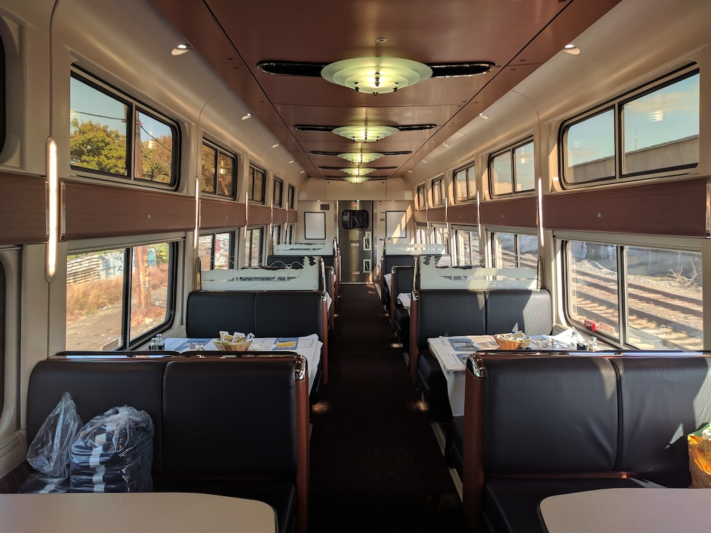

Jim Loomis passed away on March 26, 2024, at the age of 87. I met Jim once, for about an hour, but he’s one of those people who stayed with me.
Jim was a train and transit enthusiast. He served on the board of directors for the Rail Passengers Association (which I will always call NARP). He blogged at Trains and Travel with Jim Loomis. He authored several books, including All Aboard: The Complete North American Travel Guide, Travel Tales, and Fascinating Facts about Hawaii.
This last title suggests what for me is the most fascinating thing about Jim. He moved from Connecticut to Hawaii in 1962, and lived there the rest of his life. Hawaii has no trains, save Honolulu’s light rail network, whose first stage opened just last year (I hope Jim rode it). It’s a five-hour flight from Honolulu to the West Coast. That didn’t stop Jim from riding almost every train in North America, some many times. It also didn’t stop him from advocating for improved service, even though as a resident of Hawaii he didn’t benefit directly.
The first and only time I met Jim was on an eastbound Capitol Limited. I’m not sure which year this was, but probably 2013 or 2014. He would have been on his way to a meeting in DC, and I would have been on my way home from a conference (having sworn off the Lake Shore Limited at the time). The Capitol Limited had a dining car then, and Amtrak practices community seating in its dining cars. I was seated with Jim a few other people; I don’t remember anything about them.
I do remember Jim, and his infectious enthusiasm for train travel. He was pleased that I was already a member of NARP. For my part, I started following his travel blog, which he kept updated until shortly before his death. I always had mixed feelings about community seating in the dining car. I think for introverts it was very awkward. I was often a solo passenger paired with a couple or a group of three, and it was easy to get isolated. Sometimes, however, you got lucky. Sometimes you got Jim.
